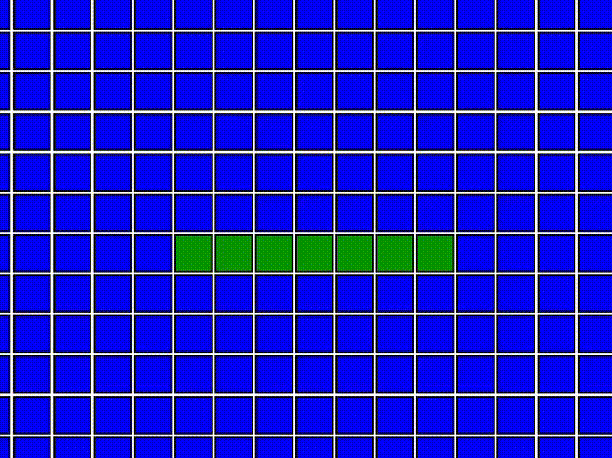

Особенности

Легкое изучение иероглифов
Каждая головоломка помогает запомнить новые символы.
Уровни сложности
Выбирайте уровень от новичка до продвинутого.

Геймификация
Зарабатывайте очки и получайте награды за прогресс.